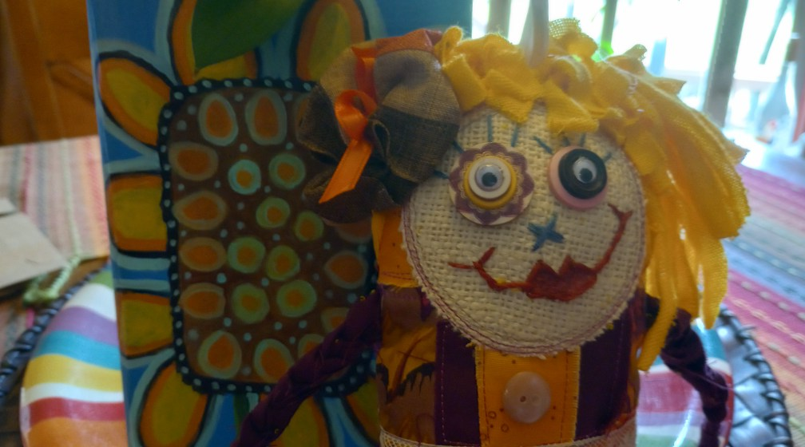
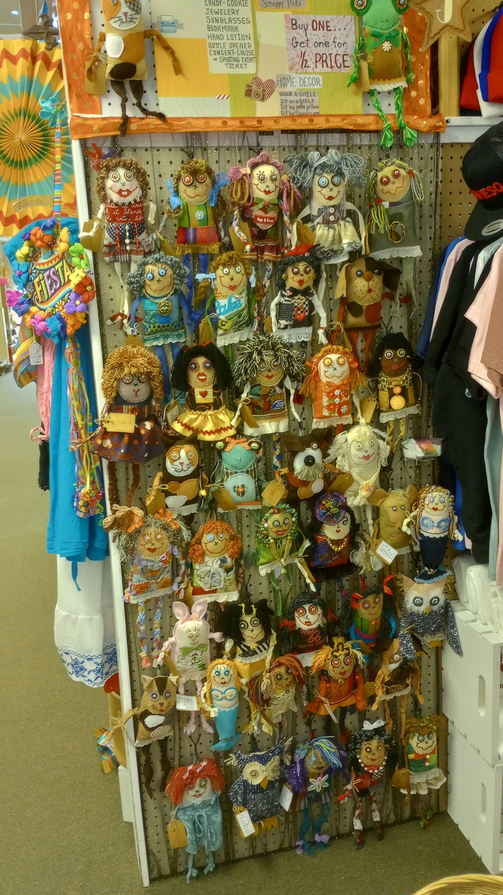

Gather
Vintage prints, quilt remnants, and meaningful scraps — every doll begins with fabric that already has a story.
Handmade by Kanda Kay
Scrappy Dolls is a small studio of one-of-a-kind cloth dolls and custom memory dolls — each hand-cut and hand-sewn from quilting cottons, vintage prints, and beloved fabric remnants too lovely to throw away.

The Studio
Every Scrappy Doll begins as a pile of fabric — quilt offcuts, an old pillowcase, the last good piece of a favorite shirt.
Kanda Kay cuts, pieces, and stitches each doll by hand, finishing with embroidered features and a name only that doll will ever wear. The result is a small, sturdy companion — warm-feeling, washable, and unmistakably one of a kind.
The Process
Vintage prints, quilt remnants, and meaningful scraps — every doll begins with fabric that already has a story.
Pattern pieces are hand-cut, then arranged and pieced into a unique combination of color, weight, and texture.
Each seam is sewn by hand for strength and character. Faces are embroidered with thread; nothing is glued or printed.
Hair, jewelry, dresses, and details are added one at a time until a doll has clearly arrived as itself.
Recent Work
A look at recent Scrappy Dolls. New work appears first on Facebook — follow along to see them as they're finished.

Kind Words
Kanda is an AMAZING artist! She is friendly, professional, very reasonable in pricing, and responsive. We are SO HAPPY with the final product — she captured our furr-babes so perfectly in her whimsical, fun way!
I know and recommend this artist — she is amazing and talented. One of a kind.
This artist is magic! I have quite a few pieces, plus one that was specifically commissioned.
Frequently Asked
New dolls are announced on the Scrappy Dolls Facebook page as they're finished. Send a message there to ask about what's currently available.
Memory dolls — made from a child's outgrown clothing, a wedding dress, a beloved quilt — are part of what scrappy dolls are best at. Reach out via Facebook to talk through your fabric and what you'd like.
Dolls are sewn with sturdy seams and embroidered features (no buttons or small attached parts), and stuffed with fiberfill. They make wonderful keepsakes and play companions for older babies and children.
Spot clean with a damp cloth and mild soap. For a deeper clean, hand-wash gently in cool water and reshape while damp; lay flat to dry.
It depends on the fabric, the character, and the level of detail. A doll can take anywhere from an afternoon to several days — and each one tells you when it's done.
Stay close
Follow Scrappy Dolls on Facebook for new work, sneak peeks of what's on the table, and the stories behind the fabric.